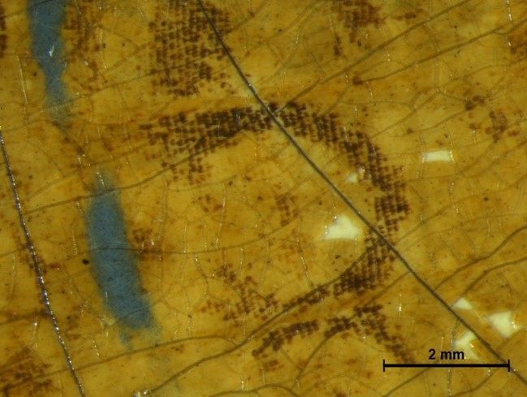
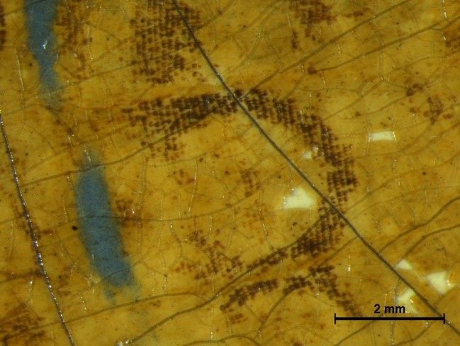

/01/
Flowers, Insects and Reptiles
Otto Marseus van Schrieck, 1673, 70.0 x 53.4 cm
This painting, from a public collection, was structurally stable, however the varnish was heavily deteriorated and discoloured causing significant aesthetic impairment, and so treatment focussed on the removal of multiple layers of aged varnish. The butterflies depicted were real specimens, so cleaning needed to account for the butterfly scales sitting on the paint layer which were vulnerable to damage and loss. A resin soap gel allowed the varnish to be removed in layers, stopping above the level of the butterfly scales. Treatment allowed for technical analysis and documentation of this unusual practice, culminating in a published article.
Otto Marseus van Schrieck (c. 1620-1678) had close ties with the seventeenth-century culture of natural sciences, and his works depict an intensive study of flora and fauna spanning his career. He developed a distinctive genre of painting, the forest floor still-life, or sottobosco, characterised by a dark, undergrowth setting teeming with reptiles and amphibia, toads and snakes, butterflies and moths. In his home near Amsterdam he bred and kept many of the animals he used as models in his paintings.

 
